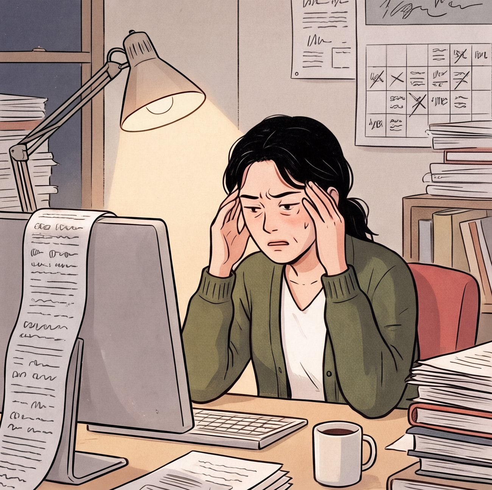
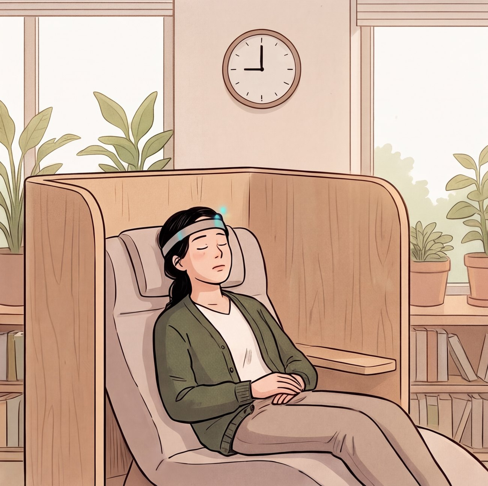
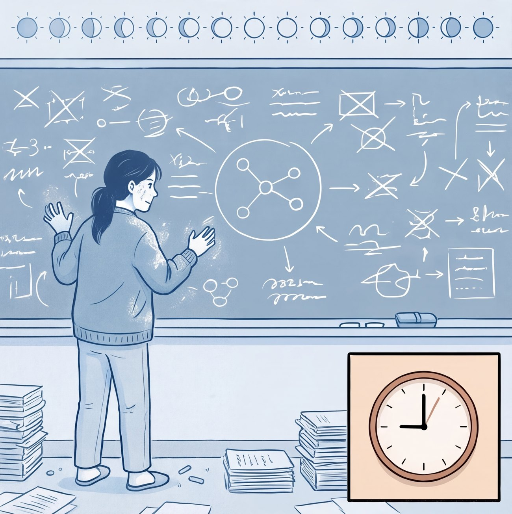
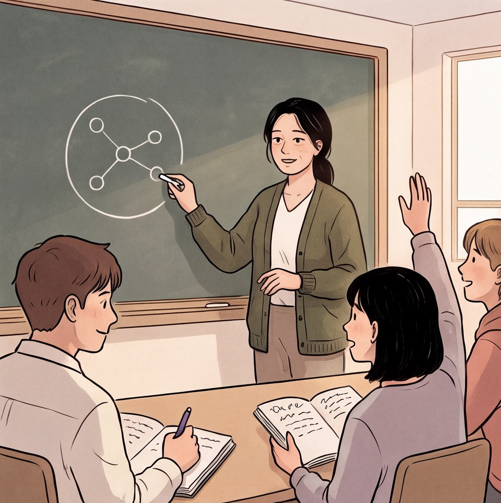

AT A GLANCE
포스터를 한눈에
① 문제
게으른 것이 아니라 효율적인 선택. 그러나 효과적이지는 않다.
3일(4,320분)이 걸린다고 가정하면 AI에게 묻는 1분이 이만큼 효율적입니다.
4,320배
수학 논문(arXiv 수학 분야)은 2025년 한 해 46,225편이었고, 2026년은 1~10월만 57,255편이 올라와 이미 2025년 전체를 넘었습니다.
진리를 탐구하는 사람수학자 서윤(39)
진짜 바쁜 사람스타트업 대표 도현(44)
마음이 힘든 사람회사원 하은(31)
② 미래 장면 · 2045년, 수학자 서윤의 하루




눈을 떴을 때 몇 주 동안 씨름한 기억이 남아 있고, “내가 이해했다”고 느끼는 순간. 그것이 핵심 경험입니다.
③ 어떻게 작동하는가
읽기헤드밴드가 뇌 신호를 측정하고 AI가 해독한다
가속내 뇌를 모사한 모델이 가상 공간에서 몇 주를 1시간으로 압축한다
귀환생각한 과정이 결론과 함께 내 기억으로 돌아온다
복기생각이 글·영상으로 남아, 막힌 곳부터 다시 본다
안전장치는 우리가 가정한 정책입니다. 칠레 헌법(2021), 미국 콜로라도·캘리포니아 신경 데이터법(2024), 유네스코 권고(2025)처럼 이미 논의가 시작됐습니다.
④ 앞으로 검증할 질문
기술솔직히 아직은 구현할 수 없습니다. ‘읽기’는 마비 환자 대상 임상이 진행 중이고, ‘쓰기’는 일부, ‘복제·가속’은 현재 근거가 없는 가정입니다.
철학 · 테세우스의 배컴퓨터 속의 나는 ‘나’일까요? 우리의 가설은 정체성이 기억의 연속에 있다는 것입니다.
사회문자도, 스마트폰도, 디지털 결제도 처음에는 걱정의 대상이었습니다. 편익, 안전장치, 점진적 노출이 일상을 만듭니다.